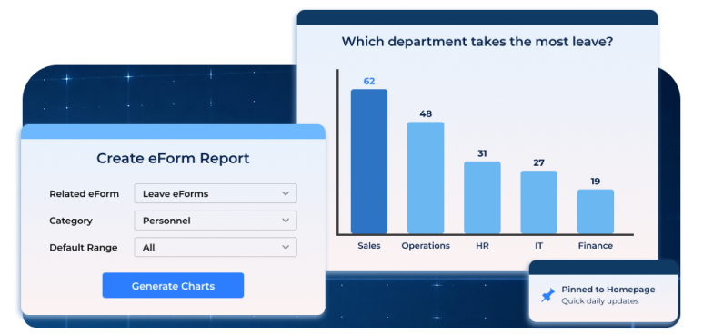
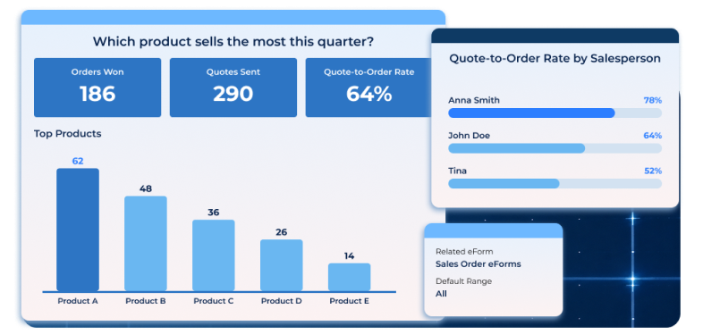
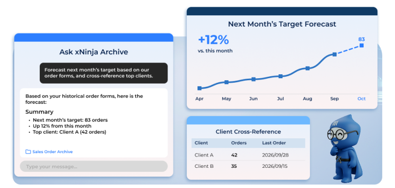
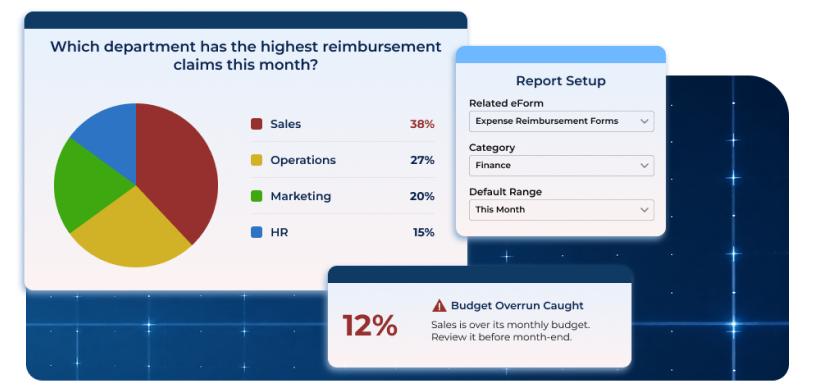

หลายปีที่ผ่านมา ธุรกิจต้องรับมือกับแบบฟอร์มกระดาษที่ยุ่งเหยิง ติดตามยาก และสูญหายได้ง่ายมาก ก้าวต่อไปที่เป็นธรรมชาติคือการเปลี่ยนสู่ดิจิทัล โดยแปลงเอกสารเหล่านั้นให้เป็นแบบฟอร์มอิเล็กทรอนิกส์ แต่แม้การเปลี่ยนสู่ดิจิทัลจะแก้ปัญหาความยุ่งเหยิงได้ หลายองค์กรกลับมองข้ามภาพที่ใหญ่กว่า: คุณรู้หรือไม่ว่าแบบฟอร์มอิเล็กทรอนิกส์ที่ส่งเข้ามาคือข้อมูลที่ทรงพลัง?
ทุกแบบฟอร์มที่ทีมของคุณกรอกคือข้อมูลหนึ่งชิ้น และ xNinja จะเปลี่ยนข้อมูลดิบเหล่านั้นให้เป็นข้อมูลเชิงลึกที่นำไปใช้ได้จริง แบบฟอร์มไม่ควรเป็นเพียงการกรอกข้อมูล แต่ยังสะท้อนถึงข้อมูลการดำเนินงานของคุณ
สำหรับฝ่ายบุคคล: ดูแลพนักงานได้ดียิ่งขึ้น
คุณสามารถสร้างรายงานแบบฟอร์มอิเล็กทรอนิกส์ใหม่ เพื่อติดตามแนวโน้มของแต่ละแผนกและความเป็นอยู่ของพนักงาน ในฐานะฝ่ายบุคคล หน้าที่ของคุณคือวิเคราะห์สภาพของพนักงาน และหาวิธีสนับสนุนที่ดีที่สุดเพื่อประโยชน์โดยรวมของบริษัท คุณมักจะถามคำถามอย่าง “แผนกใดลางานมากที่สุด?” ด้วยรายงานแบบฟอร์มอิเล็กทรอนิกส์ คุณสามารถตอบได้ทันทีด้วยการตั้งค่ามุมมองเฉพาะ:
- ตั้งค่า "แบบฟอร์มที่เกี่ยวข้อง" เป็น "แบบฟอร์มขอลา" ในหมวด "บุคลากร"
- ตั้งค่า "ช่วงเวลาเริ่มต้น" เป็น "ทั้งหมด"
- สร้างแผนภูมิที่ต้องการเพื่อแสดงแนวโน้มการลา
- บันทึกรายงานและปักหมุดไว้ที่หน้าแรกเพื่อดูข้อมูลล่าสุดได้ทุกวัน

ตอนนี้ด้วย xNinja Archive คุณยังสามารถถามเกี่ยวกับข้อมูลปัจจุบันผ่านหน้าแชตได้โดยตรง หรือค้นหาประวัติของพนักงานแต่ละคนเพื่อวิเคราะห์แนวโน้มอย่างละเอียด

สำหรับฝ่ายขาย: ติดตามไปป์ไลน์และผลงาน
คุณสามารถสร้างรายงานแบบฟอร์มอิเล็กทรอนิกส์แบบกำหนดเอง เพื่อติดตามคำสั่งซื้อและผลงานการขาย สำหรับทีมขาย สิ่งสำคัญคือการเพิ่มอัตราการปิดการขายและค้นหาสินค้าที่ทำผลงานได้ดีที่สุด ซึ่งนำไปสู่คำถามสำคัญอย่าง “ไตรมาสนี้สินค้าใดขายดีที่สุด?” หรือ “อัตราการเปลี่ยนใบเสนอราคาเป็นคำสั่งซื้อของพนักงานขายแต่ละคนเป็นเท่าใด?” คุณสามารถค้นหาข้อมูลเชิงลึกเหล่านี้ได้ด้วยการตั้งค่ารายงาน:
- ตั้งค่า "ชื่อรายงาน" เป็น "รายงานใบเสนอราคา"
- ตั้งค่า "ช่วงเวลาเริ่มต้น" เป็น "เดือนนี้"
- สร้างกราฟแท่งแยกตามสินค้า ใบเสนอราคาที่ส่ง และคำสั่งซื้อ
- บันทึกรายงานและปักหมุดไว้ที่หน้าแรกเพื่อดูข้อมูลล่าสุดได้ทุกวัน

ตอนนี้ด้วย xNinja Archive คุณสามารถขอให้หน้าแชตเปรียบเทียบข้อมูลลูกค้าเฉพาะราย หรือคาดการณ์เป้าหมายของเดือนหน้าจากแบบฟอร์มคำสั่งซื้อในอดีตได้อย่างราบรื่น

สำหรับฝ่ายการเงิน: ติดตามค่าใช้จ่ายของแต่ละแผนก
คุณสามารถตั้งค่ารายงานแบบฟอร์มอิเล็กทรอนิกส์ เพื่อติดตามการใช้จ่ายและการจัดสรรงบประมาณของบริษัทอย่างใกล้ชิด สำหรับฝ่ายการเงิน การรักษาผลกำไรที่ดีหมายถึงการวิเคราะห์กระแสเงินสด และตั้งคำถามอย่าง "เดือนนี้แผนกใดเบิกค่าใช้จ่ายสูงที่สุด?" คุณสามารถติดตามได้ง่าย ๆ ด้วยการสร้างแดชบอร์ดแบบกำหนดเอง:
- ตั้งค่า "แบบฟอร์มที่เกี่ยวข้อง" เป็น "แบบฟอร์มเบิกค่าใช้จ่าย" ในหมวด "การเงิน"
- ตั้งค่า "ช่วงเวลาเริ่มต้น" เป็น "เดือนนี้"
- สร้างแผนภูมิวงกลมหรือกราฟแท่งแยกค่าใช้จ่ายตามแผนก โครงการ หรือรายบุคคล
- บันทึกรายงานไว้ที่หน้าแรกเพื่อตรวจพบงบประมาณที่เกินก่อนจะเกิดขึ้น

ตอนนี้ด้วย xNinja คุณสามารถวิเคราะห์เชิงลึกได้ด้วยการแชตกับระบบโดยตรง เพื่อแยกรายการเบิกที่มีมูลค่าสูง หรือเปรียบเทียบค่าใช้จ่ายเดือนนี้กับไตรมาสก่อน ๆ ได้ทันที